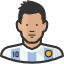

LIONEL MESSI
Welcome To Our Page


Lionel Messi, one of the world's greatest football players
Overview of his life and personal achievements in a beautiful timeline format.
View his life timeline.
- 25 June 1987
Lionel Messi is Born
Lionel Andres Messi Cuccittini was born on Wednesday, June 24, 1987. He was born in Rosario, Argentina - 17 October 2003
Messi Makes His First Appearance
The footballer made his first appearance in a match against FC Porto - 18 May 2006
Lionel Messi Plays in the Champions League
Lionel Messi achieves his first champions league on May 17, 2006. - 28 May 2009
Messi wins the 2009 UEFA Champions League with Barcelona
The final match of the 2009 UEFA Champions League was played on May 27, 2009. The match was held in Rome, Italy at the Stadio Olimpico. The winner of this match would be crowned the winners of the 2008-09 season of the UEFA Champions League. The winner of the match was Barcelona. They defeated Manchester United 2-0. Lionel Messi scored the final goal of the match. The UEFA Champions is a tournament that involves the top football clubs in all of Europe. - 2 December 2009
Messi Earns First Ballon d’Or
On December 1, 2009, Lionel Messi was awarded his very first Ballon d’Or. - 11 January 2011
Messi Earns His Second Ballon d’Or
Messi received his second consecutive Ballon d’Or on January 10, 2011. It was a great year for La Masia, the FC Barcelona academy. It became the first youth academy to have all three of the finalists for the Ballon d’Or in a single year. The players were Lionel Messi, Andres Iniesta, and Xavi. - 10 January 2012
Messi’s Third Ballon d’Or
The award ceremony was held in Zurich on January 9, 2012. Lionel Messi received the title of world player of the year at the award ceremony. This marked the third consecutive year that Lionel Messi was named the winner of the Ballon d’Or. - 8 January 2013
Messi’s Fourth Ballon d’Orr
Messi landed his fourth Ballon d’Or on January 7, 2013. The footballer was, for the fourth consecutive year, named the world’s best football player. - 12 January 2016
Messi’s Fifth Ballon d’Or
Messi’s skills as a footballer have not been going unnoticed. For the fifth time, Messi received the Ballon d’Or award. - 3 December 2019
Messi’s Sixth Ballon d’Or
Messi attended the 64th annual ceremony of the Ballon d’Or. It was presented by France Football. Lionel Messi was recognized as the best player in the world for 2019. This marked the sixth time that Messi has received this award in his career. - 20 March 2022
messi 2022
messi tranfird from barcelona to PSG and his 7th ballon'Dor
| For More information : Timepath